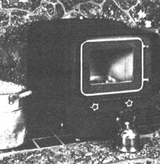
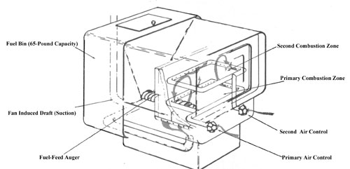

There's a race on to meet woodstove emissions regulations, and-as of this writing-the Collins Bio-Energy Pellefier may well be at the head of the pack.
The drive to clean up particulate emissions from woodstoves (discussed in MOTHER N0. 95) is forcing major changes in a field that's undergone little significant development since Ben Franklin's days. However, despite major efforts, attempts to make direct improvements in the combustion efficiency of cordwood-burning space heaters have been only marginally successful. In fact, some researchers have concluded that the inconsistency of the fuel makes it just about impossible to dramatically improve combustion efficiency. Consequently, most designers now use a catalytic converter-a device that burns smoke after it's been produced-to meet emissions requirements.
Collins Bio-Energy Company has taken a different approach to perfecting efficient wood combustion-one that goes to the source. The Pellefier burns 1/4"-to 1/2"-diameter pellets of compressed wood (or other combustible material) that are automatically fed by an auger from an integral fuel bin. Inside the Pellefier-which, as you can see, looks much like a regular woodstove-the pellets are gasified in a preburner and the volatile by-products are burned in a secondary combustion chamber. On the average, 95% of the pellet mass burns, and peak combustion efficiency may hit 99%.
Because the Pellefier burns so cleanly-it's the cleanest solid-fuel burner ever tested by the Oregon Department of Environmental Quality-the designers were able to include a long and convoluted heat-exchange path without worrying about creosote accumulation. The tremendous surface area inside the passage extracts 85% of the heat available, leaving a stack temperature of only 155°F at maximum burn rate.
With such a low gas temperature, natural chimney draft would be neither effective nor desirable. Instead, the Pellefier has a blower that draws combustion air through the heater and expels the meager volume of fumes out a natural gas-rated stack. (A conventional "Class A" woodstove chimney isn't needed.) The Pellefier burns so cleanly, in fact, that Bruce Collins-one of the stove's designers-has run one without a chimney, exhausting it directly into the room. Once Collins Bio-Energy perfects a cyclone filter to remove the few particles that do pass through the system, people in dry climates may actually be able to forgo a chimney altogether. (In damp areas, the moisture generated by the fuel would make the house air too humid.)
The Pellefier is capable of heat outputs between 7,000 and 30,000 Btu per hour, a range suitable to the majority of homes. Its fuel-feed rate is automatically controlled to maintain an air-temperature thermostat setting, and the 65 pounds of fuel in the bin will last from 24 to 48 hours-depending on the heat output.
At this point, pellet fuel is available in many parts of the U.S., but Collins Bio-Energy sees the market expanding dramatically. Pellets can be made from corncobs, peat, paper, coal, and agricultural waste-as well as the more conventional forest products. Pelletization offers the potential to burn a wide variety of biomass that otherwise would become waste; furthermore, the Pellefier burns such fuels so cleanly that it's preferable, on the basis of emissions alone, to just about any other current combustion technology.
EDITOR'S NOTE: To find out more about the Pellefier and where your nearest dealer is located, write to: Collins Bio-Energy Co., 11426 Gravelly Lake Dr. S. W, Tacoma, WA 98499.
|
 Photo Courtesy of Collins Bio-Energy Co. |
 |
|